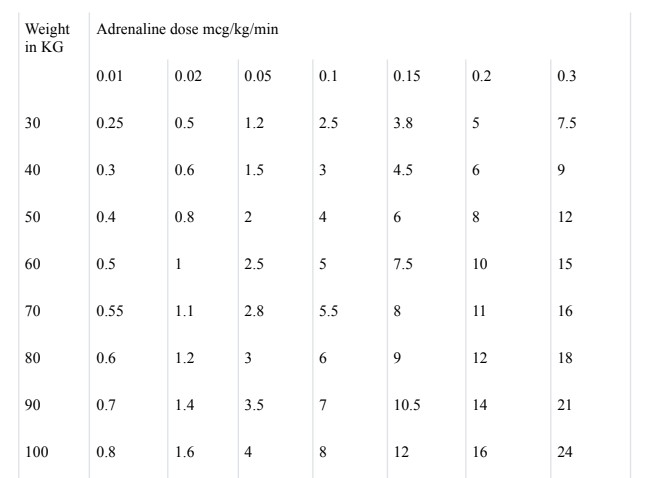
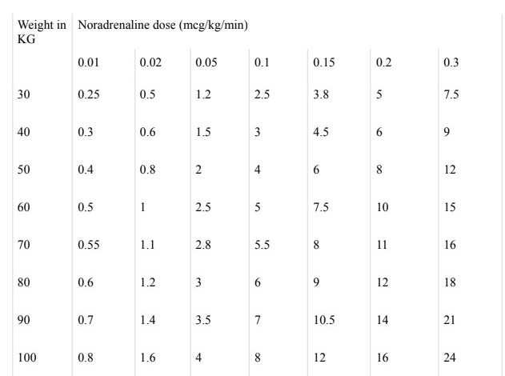

Cardiopulmonary resuscitation (CPR) is an emergency treatment that's done when someone's
breathing or heartbeat has stopped. For example, when someone has a heart attack or nearly
drowns. CPR can help save a life.
The American Heart Association recommends starting CPR by pushing hard and fast on the
chest. The pushes are called compressions. This hands-only CPR recommendation is for both
people without training and first responders.
Here's CPR advice from the American Heart Association:
Not trained. If you're not trained in CPR or don't want to put your mouth on the person's
mouth or nose, then do hands-only CPR. Push hard and fast in the center of the chest 100
to 120 times a minute. Do this until medical help arrives. Details are described below.
You don't need to place your mouth on the person's mouth or nose to give rescue breaths.
Trained and ready to go. If you're well trained and confident in your CPR ability, check
to see if there is a pulse and breathing. If there is no pulse or breathing within 10 seconds,
begin chest compressions. Start CPR with 30 chest compressions. Then give two rescue
breaths. Continue this pattern of chest compressions and rescue breaths until medical help
arrives.
Trained but out of practice. If you've previously received CPR training but you're not
confident in your abilities, then just do 100 to 120 chest compressions a minute. Details
are described below.
!!The above advice applies to situations in which adults, children and infants need CPR, but not
newborns. Newborns are babies up to 4 weeks old.
When to seek emergency help
If you are not trained but have immediate access to a phone, call 911 or your local
emergency number before beginning CPR. The dispatcher can tell you how to do CPR
until help arrives. To learn CPR properly, take an accredited first-aid training course. The
course should include instructions on CPR and use of an automated external defibrillator
(AED).
If you're afraid to do CPR or unsure how to do CPR correctly, know that it's always better
to try than to do nothing at all. The difference between doing something and doing
nothing could be someone's life.
Treatment
Before starting CPR, check:
Is the environment safe for the person?
Is the person conscious or not conscious?
If the person appears to be not conscious, tap or shake their shoulder and ask loudly, "Are
you OK?"
If the person doesn't respond and you're with someone else who can help, have one
person call 911 or the local emergency number and get an AED if one is available. Have
the other person begin CPR.
If you are alone and have immediate access to a phone, call 911 or your local emergency
number before starting CPR. Get an AED if one is available.
As soon as an AED is available, deliver one shock if instructed by the device. Then start
CPR.
Remember to spell C-A-B
The American Heart Association uses the letters C-A-B to help people remember the order to
perform the steps of CPR.
C: compressions.
A: airway.
B: breathing.
Compressions: Restore blood flow
Compressions means you use your hands to push down hard and fast in a specific way on the
person's chest. Compressions are the most important step in CPR. Follow these steps for
performing CPR compressions.
Put the person on their back on a firm surface.
Place the lower palm of your hand over the center of the person's chest, between the
nipples.
Place your other hand on top of your first hand. Keep your elbows straight. Place
your shoulders directly above your hands
Push straight down on the chest at least 2 inches (5 centimeters) but no more than
2.4 inches (6 centimeters). Use your entire body weight, not just your arms, when
doing compressions.
Push hard and fast in the center of the chest. You want to do 100 to 120
compressions a minute. The American Heart Association suggests doing
compressions to the beat of the song "Stayin' Alive" or another song that has 100
to120 beats a minute. Allow the chest to spring back after each push.
If you haven't been trained in CPR, continue chest compressions until there are
signs of movement or until emergency medical help takes over. If you have been
trained in CPR, go on to rescue breathing.
Airway: Open the airway
If you're trained in CPR and you've done 30 chest compressions, follow these steps to open the
person's airway. This is called the head-tilt, chin-lift maneuver.
Put your palm on the person's forehead.
Gently tilt the head back.
With the other hand, gently lift the chin forward to open the airway.
Breathing: Breathe for the person
Rescue breathing can be mouth-to-mouth breathing or mouth-to-nose breathing if the mouth is
seriously injured or can't be opened. Current recommendations suggest doing rescue breathing
using a bag-mask device with a high-efficiency particulate air (HEPA) filter.
Follow these steps after opening the airway using the head-tilt, chin-lift maneuver.
Pinch the nostrils shut for mouth-to-mouth breathing and cover the person's mouth
with yours, making a seal.
Prepare to give two rescue breaths. Give the first rescue breath — lasting one
second — and watch to see if the chest rises.
If the chest rises, give a second breath.
If the chest doesn't rise, repeat the head-tilt, chin-lift maneuver. Then give a second
breath. Thirty chest compressions followed by two rescue breaths is considered one
cycle. Be careful not to provide too many breaths or to breathe with too much force.
Continue chest compressions to restore blood flow.
As soon as an automated external defibrillator (AED) is available, follow the
device's directions. Give one shock, then continue chest compressions for two more
minutes before giving a second shock. If you're not trained to use an AED, a 911
operator or another emergency medical operator may be able to tell you how to use
the device. If an AED isn't available, go to step 7 below.
Continue CPR until there are signs of movement or emergency medical help takes
over.
To perform CPR on a child
The process for giving CPR to a child age 1 through puberty is essentially the same as that for an
adult — follow the C-A-B steps. The American Heart Association says you should not delay
CPR and offers this advice on how to perform CPR on a child:
Compressions: Restore blood flow
If you are alone and didn't see the child collapse, start chest compressions and continue for about
two minutes. Then quickly call 911 or your local emergency number and get an AED if one is
available.
If you're alone and you did see the child collapse, call 911 or your local emergency number first.
Then get an AED, if available, and start CPR. If another person is with you, have that person call
for help and get the AED while you start CPR.
Place the child on their back on a firm surface.
Kneel next to the child.
Place two hands — or only one hand if the child is very small — on the lower half
of the child's breastbone.
Using the lower palm of one or both hands, press straight down on the chest about 2
inches (5 centimeters) but not greater than 2.4 inches (6 centimeters). Push hard and
fast — 100 to 120 compressions a minute.
If you haven't been trained in CPR, continue chest compressions until the child
moves or until emergency medical help takes over. If you have been trained in CPR,
open the airway and start rescue breathing.
An automated external defibrillator (AED) is a portable device that can be used to treat a person
whose heart has suddenly stopped working. This condition is called sudden cardiac arrest.
AEDs are available in many public places, such as government buildings, schools, airports and
other community spaces. Small, lightweight AEDs are available without a prescription for use at
home.
People with severe heart disease who are at risk of sudden cardiac arrest might consider having
an AED at home. Talk to your healthcare professional about whether you should buy an AED for
your home.
When is an AED needed?
An AED is used to revive someone from sudden cardiac arrest. This usually happens when a
problem in the heart's electrical activity causes a dangerously irregular heartbeat. The irregular
heartbeat prevents the heart from pumping as it should and causes the heart to stop.
When this happens, the brain and other organs don't get the blood and oxygen they need.
Treatment is needed within minutes to prevent death. The sooner the heartbeat is restored, the
greater the chance there won't be permanent damage to the brain and other organs.
All AEDs include instructions on when and how to use them. Training on proper use of an AED
is recommended. But someone with no training also can use the device to reset the heartbeat of a
person who has had a sudden cardiac arrest. Using the AED could possibly save a life.
Cardiopulmonary resuscitation (CPR) after cardiac arrest can keep blood flowing to the heart and
brain for a time. But often only defibrillation can restore the heartbeat. Together these treatments
can improve the chances of survival.
How to use an AED
If someone has fainted or collapsed and an AED is available:
Check to see if the person is breathing and has a pulse.
If you cannot feel a pulse and the person is not breathing, call for emergency
help. If you're alone, call 911 or emergency services first to make sure help is on the
way. If another person is present, one person can call 911 while the other prepares the
AED. If other people can help, one person can begin CPR while the AED is being
prepared.
Turn on the AED. The AED gives step-by-step voice instructions. It tells you how to
check for breathing and a pulse. It tells you how and where to place the AED pads on
the person's bare chest.
Stand clear and deliver the shock. When the pads are in place, do not touch the
person while the AED measures the person's heartbeat. If the machine thinks a shock
is needed, it tells the user to stand back and push a button to deliver the shock. Make
sure you or no one else is touching the person. Say "stand clear" loudly, and push the
shock button. The AED only delivers a shock when needed.
Start CPR. Begin CPR after the shock is delivered if CPR is still needed. The AED
will also guide users through CPR. The process can be repeated as needed until
emergency medical teams take over.
What Is the Purpose of Intubation?
Intubation is a relatively common procedure that’s performed on patients who can’t maintain
their airway, patients who can’t breathe without assistance, or a combination of both.
Common reasons for intubation:
The patient will undergo general anesthesia.
The patient suffers from respiratory failure. There are various reasons why a patient
may be too ill to breathe on their own:
They may have suffered an injury to their lungs.
They might have severe pneumonia.
They may have a breathing problem, like chronic obstructive
pulmonary disease (COPD).
Intubation Prep
Preparation can greatly vary from one situation to the next. If you’re facing a difficult airway,
you will likely perform an “awake intubation.” This is because a detailed airway examination is
time-consuming and often not feasible during an emergency. Using a simple 1-2-3 rule for
airway examination will allow you to detect potential airway difficulty in a minute or less.
When possible, however, psychological preparation is always best for the patient. Do your best
to explain the procedure in basic terms. Sedatives can also be used to provide comfort without
compromising airway patency. According to NCBI, other types of preparation may include
“anaesthetizing the airway through topical application of local anesthetics and appropriate nerve
blocks.”
Intubation Steps
Here are some of the general guidelines you should follow when intubating a patient in a
controlled setting:
Before intubation, the patient is usually sedated or not conscious, allowing their
mouth and airway to relax. They often lie on their back, while the healthcare
professional stands near the top of the bed, facing the patient’s feet.
The patient’s mouth is gently opened. Using an instrument to flatten the tongue
and illuminate the throat, the tube is steered into the throat and advanced into the
airway.
A small balloon around the tube is inflated to keep the tube in place and prevent
air from escaping. Once this balloon is inflated, the tube must be tied or taped in
place at the mouth.
Successful placement is checked by listening to the lungs with a stethoscope and
can be further verified through a chest X-ray.
If faced with a problematic airway, call for the difficult airway cart
and ask experienced colleagues to help.
Note: Preoxygenation and monitoring during awake intubation is
important.
The tube is much easier to remove than to place. First, remove the ties or tape
that hold it in place. Then, deflate the balloon so that the tube can be carefully pulled
out.
Nasal Intubation
In some cases, the breathing tube is placed in the nose rather than the mouth. This is called nasal
intubation. It’s performed if the mouth or throat has been injured or requires an operation. During
this procedure, the nasotracheal tube (NT) goes into the nose, down the back of the throat, and
into the upper airway.
This type of intubation is far less common, though, as it’s easier to intubate using the larger
mouth opening. It also isn’t necessary in most scenarios.
Pediatric Intubation
While the size of the equipment is smaller, the actual process of intubation is often the same for
adults and older children. However, it’s important to remember that a child requires a smaller
tube than an adult. The procedure will also require a higher degree of precision since their airway
is also smaller.
Nasal intubation is preferred for neonates and infants. In addition, there are different steps to
follow in order to prepare a child for surgery.
Necessary Equipment for Intubation
The suggested supplies for endotracheal intubation include the following:
Laryngoscope: A metal or plastic device with a handle and curved blade attached to
a light. It’s inserted into the top of the throat to visualize the epiglottis.
Endotracheal tube: A thin, flexible tube outfitted with an inflatable balloon (cuff)
that is placed inside the airway.
Stylet: A slender and pliable rod or wire that is placed inside the tube to make
insertion easier.
Syringe: This instrument is used to inflate the balloon within the tube.
Suction catheter: A tube to suction out secretions and prevent aspiration.
Carbon dioxide detector: A device that’s used to check the position of the tracheal
tube by measuring exhaled carbon dioxide.
Oral airway: A device that conforms to the shape of the tongue and is placed inside
the mouth to maintain a clear airway.
Nasal airway: A device that keeps the nasopharyngeal airway clear.
Bag-valve-mask: A mask used for preoxygenation, which is the administration of
oxygen to a patient prior to intubation. This is done to extend ‘the safe apnoea time.’
Nasal cannula: A tube with two prongs that fit into the nostrils, which provides
additional oxygen.
Tips for Mastering Intubation
Many of our pro intubation tips involve technique, knowing your instruments, and handling
difficult-to-intubate cases. Here are a few pro intubation tips that may assist you in the future.
Your initial goal is to find the epiglottis. If you insert the blade extremely slowly
into the mouth (about 1 cm at a time), the progression will be tongue, tongue, tongue,
tongue, tongue, tip of the epiglottis. This intentionally slow blade insertion technique
gives you the best opportunity to slip the blade into the vallecula.
If you only see pink mush, that’s not the tongue and you need to pull back.
Everyone knows what the tongue looks like, and the epiglottis is obviously the
epiglottis. So, the only mushy thing in there is the esophagus (and technically the
posterior pharynx).
If you pass the epiglottis, you’re either looking at the trachea, or you’ve snuck the
tip of the blade into the esophagus. Keep in mind that, once you lift the esophagus, it
opens up as big as the trachea and looks similar to a trachea without vocal cords.
When using a Miller (i.e. straight) blade, if the tongue is moving in your view, shift
the blade slightly to the right of the tongue’s midline. This will pop the tongue over to
your left and keep it out of the way.
With the Macintosh blade, get the mouth to open wide and insert the blade on the
far-right side of the mouth. Then, turn the handle of the blade 90 degrees so that the
handle is nearly pointing toward the left ear. Advance to just about the depth of the
epiglottis and rotate back to the normal position (perpendicular to the teeth and
pointing toward the far corner of the room).
How to confirm you’re in the trachea during emergencies or loud environments:
The solution lies with capnography. As soon as you place a tube in the trachea,
carbon dioxide will stream from the tube with every exhalation. If you have a
quantitative capnometer, you’ll promptly receive a CO2 level in the 30s or 40s. If you
have a qualitative capnometer, it will switch from purple to yellow the instant you’re
in the trachea, but be extremely careful.
The key to ventilating is to use the c-clamp technique you’ve seen in class, but
make sure you pull the chin up and into the mask. Don’t press the mask down on the
face. Hook the chin with one of your fingers and squeeze it up into the mask. Try to
put your pinkie on the angle of their jaw and pull up.
If you perform each of these tips and still can’t see the vocal cords, your patient is
likely a “hard tube.” You need to ask someone else to intubate them or try another
rescue airway.
Oxygen therapy is a medical treatment that involves providing supplemental oxygen to patients
who are experiencing hypoxemia, or low blood oxygen levels. This therapy helps improve
oxygenation in the blood, thereby ensuring that vital organs and tissues receive sufficient oxygen
to function properly. It is commonly used in conditions such as chronic obstructive pulmonary
disease (COPD), pneumonia, asthma exacerbations, heart failure, and during surgical
recovery. Oxygen therapy can be delivered through various devices, including nasal cannulas,
face masks, and mechanical ventilators, depending on the patient’s needs and the severity of their
condition.
The primary goals of oxygen therapy are to:
Increase arterial oxygen levels. Ensuring sufficient oxygen levels in the blood helps
maintain adequate tissue oxygenation and prevent hypoxia.
Reduce the work of breathing. By providing supplemental oxygen, the therapy eases
the effort required by the respiratory muscles, allowing for more comfortable and
efficient breathing.
Decrease the workload on the heart. Enhanced oxygen delivery reduces the strain on
the heart, particularly beneficial in patients with cardiac conditions, as the heart does not
have to pump as hard to circulate oxygenated blood.
Alleviate symptoms of hypoxemia, such as shortness of breath and fatigue.
Improving blood oxygen levels helps relieve symptoms associated with low oxygen,
enhancing patient comfort and overall quality of life.
Devices Used in Oxygen Therapy
Oxygen therapy utilizes various devices to deliver supplemental oxygen to patients, tailored to
their specific needs. Low-flow systems, such as nasal cannulas and face masks, provide oxygen
in lower concentrations and are ideal for patients requiring modest increases in oxygen levels.
High-flow systems, including Venturi masks and high-flow nasal cannulas, deliver precise and
higher concentrations of oxygen, making them suitable for patients with more severe respiratory
issues. Each device plays a crucial role in ensuring effective oxygen delivery and patient
comfort. Understanding the distinctions between these systems helps in selecting the appropriate
therapy for optimal patient outcomes Here are the common types of oxygen therapy devices,
including their usage:
Low-Flow Systems
Low-flow systems deliver oxygen through narrow-bore tubing. Devices used for low-flow
oxygen administration include nasal cannulas, face masks, oxygen tents, and transtracheal
catheters.
Nasal Cannula. A nasal cannula consists of a thin tube with two small prongs that are
inserted into the nostrils. This low-flow device is comfortable and convenient for patients
who need a small to moderate amount of supplemental oxygen (up to 6 liters per minute).
It allows for easy mobility and communication, making it suitable for long-term oxygen
therapy in patients with chronic conditions like COPD.
Face Mask. Face masks cover the nose and mouth, delivering oxygen through a mask
that fits snugly over the face. Face masks provide higher oxygen concentrations than nasal
cannulas (up to 10 liters per minute). They are used for patients who require moderate to
high oxygen levels or who cannot tolerate nasal cannulas. Different types of face masks
include simple face masks, partial rebreather masks, and non-rebreather masks, each
offering varying levels of FiO2.
Face Tent. Face tents can be used as an alternative to oxygen masks when masks are
poorly tolerated by patients. They deliver varying concentrations of oxygen, typically
ranging from 30% to 50% at flow rates of 4 to 8 L/min. Regularly check the patient’s
facial skin for signs of dampness or chafing, and address any issues by drying and treating
the skin as necessary. As with face masks, it is important to keep the patient’s facial skin
dry to avoid irritation.
Partial Rebreather Mask. A face mask with an attached reservoir bag that captures
exhaled gases. Provides higher oxygen concentrations (60-90% FiO2) by allowing the
patient to re-inhale some of the exhaled oxygen-rich air. It is used for patients needing
higher oxygen levels without a significant increase in CO2 retention.
Oxygen Tent. Oxygen tents are large, transparent enclosures that surround the patient’s
bed. Oxygen tents are often used for pediatric patients who require a controlled oxygen
environment. They provide a humidified oxygen-rich atmosphere, which is beneficial for
children with respiratory infections or other conditions needing supplemental oxygen
without the discomfort of wearing a mask.
Transtracheal Catheter. Transtracheal catheters are small tubes inserted directly into
the trachea through a surgically created opening. This device delivers oxygen directly into
the trachea, allowing for efficient oxygenation at lower flow rates compared to other
methods. It is suitable for patients requiring long-term oxygen therapy, particularly those
who do not tolerate nasal cannulas or masks well.
High-Flow Systems
High-flow systems provide all the necessary oxygen for ventilation in exact amounts,
independent of the patient’s breathing pattern. Devices that deliver a precise and consistent
fraction of inspired oxygen (FiO2) include the Venturi mask with large-bore tubing, the
non-rebreather mask, high-flow nasal cannula (HFNC), and mechanical ventilators.
Venturi Mask. The Venturi mask is a high-flow device with large-bore tubing that
delivers precise and consistent concentrations of oxygen. The Venturi mask is ideal for
patients who require a specific and stable FiO2, such as those with COPD. It works by
mixing oxygen with room air through adjustable entrainment ports, providing accurate
oxygen delivery regardless of the patient’s respiratory pattern.
Non-Rebreather Mask. A face mask with a reservoir bag and one-way valves to
prevent rebreathing exhaled air. Delivers the highest oxygen concentration available with
face masks (up to 100% FiO2) at flow rates of 10-15 liters per minute. It is used in
emergency situations or for patients with severe hypoxemia.
High-Flow Nasal Cannula (HFNC). A nasal cannula that delivers a high flow of
warmed and humidified oxygen. Provides precise and high concentrations of oxygen (up
to 100% FiO2) while maintaining comfort and allowing for better tolerance than
traditional face masks. It is beneficial for patients with acute respiratory failure or severe
hypoxemia.
Mechanical Ventilator. Mechanical ventilators are advanced medical devices designed
to assist or replace spontaneous breathing in patients who are unable to breathe adequately
on their own. These machines deliver controlled breaths of air, often enriched with
oxygen, to the patient’s lungs through a variety of interfaces, including endotracheal tubes,
tracheostomy tubes, or non-invasive masks.
Steps in Administering Oxygen by Cannula, Face Mask, or Face Tent
Here are the steps for administering oxygen using a cannula, face mask, or face tent:
Assessment
The following are the steps for assessing the administration of oxygen using a cannula, face
mask, or face tent:
Assess patient’s skin and mucous membrane color.
Evaluating the color of the skin and mucous membranes helps identify signs of cyanosis, which
indicates inadequate oxygenation. The presence of mucus or sputum production can provide
insight into respiratory conditions like infection or chronic bronchitis. Impairment of airflow,
suggested by changes in color or sputum characteristics, can signal obstructive issues or the need
for further intervention.
Assess patient’s breathing patterns.
Monitoring the depth and rate of respirations, as well as abnormal patterns such as tachypnea
(rapid breathing), bradypnea (slow breathing), or orthopnea (difficulty breathing when lying
flat), helps assess the severity of respiratory distress and the effectiveness of oxygen therapy.
These patterns provide clues about the underlying respiratory or cardiac conditions and guide
adjustments in treatment.
Assess patient’s chest movements.
Observing chest movements and looking for retractions (intercostal, substernal, suprasternal,
supraclavicular, or tracheal) during breathing can indicate respiratory distress or compromised
lung function. Retractions suggest increased work of breathing or irway obstruction and may
require prompt intervention.
Assess patient’s chest wall configuration.
Identifying abnormalities in chest wall configuration, such as kyphosis (abnormal curvature of
the spine), barrel chest (increased anteroposterior diameter), or unequal chest expansion, helps
assess the impact of chronic respiratory conditions or deformities on lung function. These
observations assist in planning appropriate interventions and monitoring progression.
Auscultate patient’s lung sounds.
Auscultating the lungs provides information about the presence of abnormal sounds such as
wheezing, crackles, or decreased breath sounds, which can indicate conditions like asthma,
pneumonia, or pleural effusion. Early detection of abnormal lung sounds helps guide treatment
adjustments and interventions.
Assess presence of clinical signs of hypoxemia.
Monitoring for signs of hypoxemia (such as tachycardia, tachypnea, restlessness, dyspnea,
cyanosis, and confusion) helps gauge the severity of oxygen deprivation. Early signs like
tachycardia and tachypnea suggest mild to moderate hypoxemia, while confusion indicates
severe oxygen deprivation requiring immediate intervention.
Assess presence of clinical signs of hypercarbia (hypercapnia).
Observing signs of hypercarbia (e.g., restlessness, hypertension, headache, lethargy, tremor)
helps identify elevated carbon dioxide levels, which can occur in conditions like COPD.
Recognizing these signs is crucial for adjusting oxygen therapy to prevent respiratory acidosis
and ensure proper gas exchange.
Monitor patient’s vital signs.
Regularly monitoring vital signs, especially pulse rate and quality, along with respiratory rate,
rhythm, and depth, provides essential information about the patient’s overall cardiovascular and
respiratory status. Changes in vital signs can indicate deterioration or improvement and help
guide further treatment decisions.
Determine whether the patient has COPD.
In COPD patients, a high carbon dioxide level may be the primary stimulus for breathing rather
than low oxygen levels. Monitoring arterial blood gas levels (PaO2 and PaCO2) is crucial to
prevent oxygen-induced hypercapnia, which can lead to respiratory complications.
Determine results of diagnostic studies.
Reviewing diagnostic studies such as chest x-rays provides detailed information about lung
pathology, including conditions like pneumonia, pneumothorax, or pleural effusion. These
findings help in tailoring the oxygen therapy and overall treatment plan.
Determine patient’s hemoglobin, hematocrit, and complete blood count.
Assessing these blood parameters helps evaluate the oxygen-carrying capacity of the blood and
detect anemia or polycythemia, which can affect oxygen delivery and tissue perfusion.
Determine patient’s oxygen saturation levels.
Measuring oxygen saturation levels (SpO2) with a pulse oximeter provides real-time
information on the effectiveness of oxygen therapy and helps ensure that the patient is receiving
adequate oxygenation.
Determine patient’s arterial blood gas levels.
Analyzing arterial blood gases (ABGs) provides comprehensive information on the patient’s
acid-base balance, oxygenation, and ventilation status. This data is critical for fine-tuning oxygen
therapy and addressing any underlying respiratory or metabolic imbalances.
Determine patient’s pulmonary function tests.
Pulmonary function tests (PFTs) assess lung volumes, capacities, and flow rates, offering insight
into the patient’s respiratory status and potential underlying conditions. These tests help guide
long-term management and evaluate the effectiveness of ongoing therapy.
Implementation
The following are vital measures for administering oxygen therapy with a cannula, face mask, or
face tent:
Determine the need for oxygen therapy, and verify the order for the therapy.
Assessing the need for oxygen therapy involves evaluating clinical indicators such as oxygen
saturation levels, respiratory rate, and signs of hypoxemia (e.g., cyanosis, dyspnea). This is
crucial because oxygen therapy is only warranted when there is a documented deficiency in
oxygen levels or impaired respiratory function. Proper assessment ensures that the therapy is
applied appropriately, preventing unnecessary treatment or delays in addressing oxygenation
needs. Verifying the physician’s order ensures that the oxygen therapy is administered according
to the prescribed flow rate, method, and duration. This step is essential for ensuring accuracy and
consistency in treatment. It also helps avoid errors in oxygen delivery, which can lead to
complications such as over-oxygenation or insufficient oxygenation. Confirming the order
ensures that the therapy aligns with the patient’s specific clinical needs and treatment plan.
Prepare the patient and support people.
Preparing the patient and support people involves explaining the purpose and process of oxygen
therapy, addressing any concerns, and ensuring they understand how to support the patient. This
preparation helps reduce anxiety, enhances cooperation, and ensures that everyone is informed
about the necessary procedures and precautions.
Assist patient to a semi-Fowler’s position if possible.
Positioning the patient in a semi-Fowler’s position (sitting at an angle between 30 and 45
degrees) can facilitate optimal lung expansion and improve ventilation. This position helps
reduce the pressure on the diaphragm and allows for better oxygenation of the blood.
Additionally, it can aid in the comfort of the patient and reduce the risk of complications such as
aspiration.
Before initiating oxygen therapy, introduce self and confirm the patient’s identity
according to the agency’s protocol.
This ensures that the correct patient receives the therapy, enhancing patient safety and
compliance with protocols.
Provide a clear explanation of the procedure, including its purpose and necessity, and
inform the patient about how they can be involved. Additionally, discuss how the results of
the oxygen therapy will guide future care decisions or treatments.
This helps the patient understand the intervention, which can alleviate anxiety and improve their
cooperation. This also involves the patient in their treatment plan, making them more engaged
and providing clarity on how the therapy outcomes will influence ongoing care decisions.
Perform hand hygiene and observe other appropriate infection prevention procedures.
Hand hygiene is crucial for preventing the spread of infections and maintaining a sterile
environment. Proper handwashing or use of hand sanitizer reduces the risk of transmitting
pathogens. Adhering to infection prevention measures ensures that all protocols are followed to
minimize the risk of infections and maintain patient safety and hygiene throughout the
procedure.
Ensure patient privacy is maintained, when applicable.
Maintaining patient privacy respects the patient’s dignity and confidentiality, which is essential
for building trust and ensuring a comfortable and safe environment. It also complies with legal
and ethical standards for patient care.
Set up the oxygen equipment and the humidifier by following these steps:
Connect the flow meter to the wall outlet or oxygen tank, ensuring it is in
the off position initially.
Attaching the flow meter in the off position prevents accidental oxygen flow during
setup, ensuring safety and accuracy when adjusting the flow rate.
If required, fill the humidifier bottle, preferably before approaching the
patient.
Filling the humidifier bottle before bedside streamlines the process and minimizes
disruption or delays in patient care.
Securely attach the humidifier bottle to the base of the flow meter.
Connecting the humidifier bottle properly ensures that the oxygen delivered is
adequately moisturized, improving patient comfort and preventing dryness in the
airways.
Connect the prescribed oxygen tubing and delivery device to the
humidifier.
Attaching oxygen tubing and delivery device securely establishes the complete
oxygen delivery system, allowing for effective and accurate administration of oxygen
therapy.
Turn on the oxygen at the prescribed rate and verify its proper functioning by
performing the following checks:
Ensure oxygen flow. Check that oxygen is flowing freely through the
tubing, making sure there are no kinks and that all connections are airtight.
Verifying that the oxygen flows freely and that the tubing is unobstructed ensures
that the patient receives the correct amount of oxygen. Airtight connections and lack
of kinks prevent leaks or interruptions in therapy.
Observe bubbles in the humidifier as the oxygen flows through.
Bubbles indicate that the humidifier is functioning correctly and that the oxygen is
being properly moistened, which enhances patient comfort by preventing dryness.
Confirm the oxygen at the outlets of the cannula, mask, or tent.
Feeling oxygen at the outlets ensures that the delivery devices (cannula, mask, or
tent) are working as intended and that the patient will receive the oxygen.
Set the flow rate.
Accurate flow rate adjustment ensures that the patient receives the prescribed amount
of oxygen, which is critical for effective treatment and achieving desired therapeutic
outcomes.
Apply the appropriate oxygen delivery device.
Nasal Cannula
Position the cannula over the patient’s face, ensuring that the prongs fit
snugly into the nostrils and the tubing is secured around the ears.
Proper placement of the prongs ensures effective delivery of oxygen directly into the
nostrils, maximizing the therapeutic benefit. Securing the tubing around the ears helps
maintain the correct positioning and prevents the cannula from shifting.
If the cannula does not remain in place, use tape to secure it to the sides of the
face.
Using tape to hold the cannula in place prevents accidental displacement, which
could disrupt the oxygen delivery and reduce the effectiveness of the therapy.
Apply padding to the tubing and band over the ears and cheekbones if needed
to enhance comfort and prevent pressure sores.
Padding reduces pressure on the ears and cheekbones, improving patient comfort and
preventing potential skin irritation or pressure sores, especially with prolonged use.
Face Mask
Guide the mask toward the patient’s face, and apply it from the nose downward.
Applying the mask from the nose downward ensures that it covers both the nose and
mouth adequately, optimizing the delivery of oxygen.
Fit the mask to the contours of the patient’s face.
Properly fitting the mask to the contours of the face creates a secure seal, preventing
oxygen leakage and ensuring the patient receives the intended concentration of
oxygen.
Secure the elastic band around the patient’s head so that the mask is
comfortable but snug.
Adjusting the elastic band to be snug yet comfortable ensures the mask stays in place
without causing discomfort, which helps maintain consistent oxygen delivery.
Pad the band behind the ears and over bony prominences.
Padding behind the ears and over bony prominences reduces pressure and prevents
skin irritation or discomfort, especially during prolonged use of the mask.
Face Tent
Place the tent over the patient’s face.
Proper placement of the face tent ensures that it effectively encloses the nose and
mouth, delivering oxygen while allowing for some ambient air mixing. This is
beneficial for patients who cannot tolerate a mask or have facial injuries.
Secure the ties around the head.
Tying the tent securely ensures that it remains in the correct position, which helps
maintain consistent oxygen delivery and prevents it from shifting, which could lead to
ineffective treatment.
Assess patient regularly.
Regular assessment of the patient is essential during oxygen therapy to ensure the treatment is
effective and well-tolerated. Monitoring vital signs, anxiety levels, color, and ease of respiration
helps evaluate the immediate response to the therapy and address any issues promptly, such as
complaints of claustrophobia. Frequent assessments, typically every 15 to 30 minutes depending
on the patient’s condition, allow for timely adjustments and interventions based on the patient’s
evolving needs. Regular evaluations for clinical signs of hypoxia, tachycardia, confusion,
dyspnea, restlessness, and cyanosis help detect any complications early and ensure the therapy is
achieving its intended effect. Reviewing oxygen saturation or arterial blood gas results provides
a quantitative measure of oxygenation, guiding adjustments to the therapy and ensuring optimal
patient outcomes.
Nasal Cannula
Regularly check the patient’s nostrils for any encrustations or irritation
caused by the cannula. Applying a water-soluble lubricant can help soothe the
mucous membranes and prevent discomfort or damage from prolonged use.
Assessing the nares ensures that the mucous membranes remain healthy and that any
potential irritation is addressed promptly, which helps maintain patient comfort and
adherence to the therapy. Applying lubricant reduces the risk of dryness and
encrustation, which can cause discomfort and compromise the effectiveness of
oxygen delivery.
Examine the tops of the patient’s ears for signs of irritation or pressure from
the cannula tubing. Padding with a gauze pad can alleviate discomfort and
prevent skin breakdown, especially with extended use.
Evaluating the ears identifies and addresses any discomfort or potential pressure
sores caused by the cannula tubing, improving overall patient comfort. Padding the
ears prevents skin irritation and pressure ulcers, which can be particularly problematic
with long-term use of the cannula, thus ensuring sustained comfort and adherence to
therapy.
Face Mask or Tent
Regularly check the patient’s facial skin for any signs of dampness or chafing
caused by the mask or tent.
Frequent inspection helps identify and prevent skin complications such as irritation
or breakdown that can result from prolonged contact with the face mask or tent. Early
detection allows for timely intervention.
Address any issues by drying the skin and providing appropriate treatment as
needed.
Maintaining dry and healthy skin prevents discomfort and potential skin infections,
which can arise from moisture accumulation or friction. Proper skin care ensures
continued comfort and effectiveness of the oxygen therapy.
Frequently check the oxygen equipment to ensure it is functioning properly and
delivering the correct amount of oxygen.
Inspecting equipment regularly ensures the equipment is functioning correctly and provides
accurate oxygen delivery, preventing potential issues that could affect patient care.
Verify the liter flow rate and the water level in the humidifier every 30
minutes and during each patient care session to maintain accurate and effective oxygen delivery.
Monitoring liter flow and humidifier level maintains the appropriate oxygen
concentration and moisture level, which is essential for patient comfort and effective
therapy.
Ensure that no water is collecting in the dependent loops of the tubing, as
this can obstruct airflow and reduce the efficiency of oxygen delivery.
Checking for water accumulation prevents blockages in the tubing that could disrupt
oxygen flow and compromise treatment efficacy.
Confirm that all safety guidelines are being adhered to, including proper handling
and storage of equipment, to prevent accidents and ensure the safe administration of
oxygen therapy.
Following safety precautions ensures that all safety measures are in place to protect both the
patient and healthcare staff, minimizing the risk of accidents and equipment malfunctions.
SAFETY
Make sure that you, the victim and any bystanders are safe
RESPONSE
Shake the victim gently by the shoulders and ask loudly: “Are you all right?"
AIRWAY
Open the airway
If there is no response, position the victim on their back
With your hand on the forehead and your fingertips under the point of the chin,
gently tilt the victim’s head backwards, lifting the chin to open the airway
BREATHING
Look, listen and feel for breathing
Look, listen and feel for breathing for no more than 10 seconds
A victim who is barely breathing, or taking infrequent, slow and noisy gasps, is
not breathing normally
ABSENT OR ABNORMAL BREATHING
Alert emergency services
If breathing is absent or abnormal, ask a helper to call the emergency services
or call them yourself
Stay with the victim if possible
Activate the speaker function or hands-free option on the telephone so that you
can start CPR whilst talking to the dispatcher
SEND FOR AED
Send someone to get an AED
Send someone to find and bring back an AED if available
If you are on your own, DO NOT leave the victim, but start CPR
CIRCULATION
Start chest compressions
Kneel by the side of the victim
Place the heel of one hand in the center of the victim’s chest - this is the lower
half of the victim’s breastbone (sternum)
Place the heel of your other hand on top of the first hand and interlock your
Fingers
Keep your arms straight
Position yourself vertically above the victim’s chest and press down on the
sternum at least 5 cm (but not more than 6 cm)
After each compression, release all the pressure on the chest without losing
contact between your hands and the sternum
Repeat at a rate of 100-120 min-1
COMBINE RESCUE BREATHING WITH CHEST COMPRESSIONS
If you are trained to do so, after 30 compressions, open the airway again, using head tilt
and chin lift
Pinch the soft part of the nose closed, using the index finger and thumb of your hand on
the forehead
Allow the victim’s mouth to open, but maintain chin lift
Take a normal breath and place your lips around the victim’s mouth, making sure that you
have an airtight seal
Blow steadily into the mouth whilst watching for the chest to rise, taking about 1 second
as in normal breathing. This is an effective rescue breath
Maintaining head tilt and chin lift, take your mouth away from the victim and watch for
the chest to fall as air comes out
Take another normal breath and blow into the victim’s mouth once more to achieve a total
of two rescue breaths
Do not interrupt compressions by more than 10 seconds to deliver the two breaths even if
one or both are not effective
Then return your hands without delay to the correct position on the sternum and give a
further 30 chest compressions
Continue with chest compressions and rescue breaths in a ratio of 30:2
COMPRESSION-ONLY CPR
If you are untrained, or unable to give rescue breathes, give chest-compression-only CPR
(continuous compressions at a rate of 100-120 min-1)
WHEN AED ARRIVES Switch on the AED and attach the electrode pads
As soon as the AED arrives switch it on and attach the electrode pads to the victim’s bare
Chest
If more than one rescuer is present, CPR should be continued whilst the electrode pads are
being attached to the chest
FOLLOW THE SPOKEN/ VISUAL DIRECTIONS
Follow the spoken and visual directions given by the AED
If a shock is advised, ensure that neither you nor anyone else is touching the victim
Push the shock button as directed
Then immediately resume CPR and continue as directed by the AED
IF NO SHOCK IS ADVISED
Continue CPR
If no shock is advised, immediately resume CPR and continue as directed by the AED
IF NO AED IS AVAILABLE
Continue CPR
If no AED is available, OR whilst waiting for one to arrive, continue CPR
Do not interrupt resuscitation until:
A health professional tells you to stop OR
The victim is definitely waking up, moving, opening eyes, and breathing
normally OR
You become exhausted
It is rare for CPR alone to restart the heart. Unless you are certain that the victim has
recovered continue CPR
Signs that the victim has recovered
Waking-up
Moving
Opening eyes
Breathing normally
IF UNRESPONSIVE BUT BREATHING NORMALLY
Place in the Recovery Position
If you are certain that the victim is breathing normally but still unresponsive, place them in
the recovery position SEE FIRST AID SECTION
Be prepared to restart CPR immediately if the victim becomes unresponsive, with absent or
abnormal breathing
Shock is a critical condition brought on by the sudden drop in blood flow through the body.
Shock may result from trauma, heatstroke, blood loss or an allergic reaction. It also may result
from severe infection, poisoning, severe burns or other causes. Shock keeps organs from getting
enough blood or oxygen. If shock is not treated, it can lead to permanent organ damage or even
death.
Symptoms of shock vary depending on circumstances and may include:
Cool, clammy skin.
Pale or ashen skin.
A gray or bluish tinge to lips or fingernails.
Rapid pulse.
Rapid breathing.
Nausea or vomiting.
Enlarged pupils.
Weakness or fatigue.
Dizziness or fainting.
Changes in mental status or behavior, such as anxiousness or agitation.
After calling 911 or your local emergency number, take the following steps right away:
Lay the person down and elevate the legs and feet slightly, unless you think this may
cause pain or further injury.
Keep the person still.
Begin CPR if the person shows no signs of life, such as not breathing, coughing or
moving.
Loosen tight clothing and, if needed, cover the person with a blanket to prevent chilling.
If the person vomits or is bleeding from the mouth, and no spinal injury is suspected, turn
the person onto a side to prevent choking.
What to avoid
Don't let the person eat or drink anything.
Don't move the person unless it's needed.
Remember the steps of bleeding control with this acronym: ABC.
After ensuring you're not in immediate danger, the first step is to call 911 to request emergency
services.
Bleeding assessment.
When emergency services are on the way to provide advanced medical care, you should assess
the bleeding. Locate the source of the bleeding by looking for injuries causing blood pooling.
Clothing can affect the bleeding, so ensure you identify the wound's location on the body.
Control the bleeding.
After you find the source of the bleeding, applying pressure is the simplest, yet most effective,
technique to slow it. You can use your hand to apply direct, firm pressure or cover the wound
with any available cloth, like a shirt or towel and apply pressure to that. Push hard and maintain
the pressure for a minimum of 20 minutes or until emergency services arrive.
The injured person may feel pain or discomfort from the pressure applied to the wound. Tell the
person that the pressure level is necessary to slow the life-threatening bleeding.
For severe wounds, applying pressure may not be enough to control bleeding. If the wound is
large, pack it with any available cloth to help decrease bleeding. For packing material, use
clothing or towels; they don't need to be sterile or new. Any potential risk of infection from the
packing material can be treated with antibiotics. The first priority is to stop the bleeding
immediately.
A tourniquet is a valuable tool when applied appropriately and correctly, especially if the source
of bleeding is on an extremity, such as an arm or leg. Tourniquets are now more available and
easier to use, even allowing people to apply a tourniquet to themselves.
Applying a tourniquet requires training to ensure proper placement and tightness to control
bleeding. Once a tourniquet is applied, do not remove it even if bleeding slows or stops.
Releasing the tourniquet may allow the bleeding to resume. It's vital for medical professionals,
like emergency department staff, to assess the bleeding before releasing the tourniquet.
Adrenaline/Epinephrine
Dose
1ml=1mg (1:1000 concentration) =1ampoule.
1:1000 concentration (1mg/ml) I/V for emergency resuscitation.
1:10,000 concentrations (100 mcg/ml) for individual doses (If BP and HR are both decreased).
1:100,000 concentrations (10 mcg/ml) for individual dose (If BP is decreased).
Infusion= 0.01-0.3mcg/kg/min.
Preparation
1:1000 concentration=1ml=1mg (Undiluted).
1:10,000concentration=100 mcg/ml (Drawing up the whole 1ml in 1:1000 adrenaline
concentration ampoule and dilute with 9ml 0.9% sodium chloride injection).
1:100,000 concentration=10 mcg/ml (Drawing up the 1ml in 1:10,000 adrenaline concentration
from the 1 st syringe and dilute with 9ml 0.9% sodium chloride injection).
4 mg Adrenaline (4ml) and 46 ml NS /D5=50ml (via syringe pump).
Dose chart can be used which gives mL/hr based on body weight (as shown below).

Atropine
Dose and preparation
1ml=0.6mg=1 Ampoule.
Maximum dose: 3 mg.
Amiodarone
Dose and preparation
1amp=150mg (3ml).
Loading dose= 150 mg (3ml) in 100ml 5% Dextrose over 10 minutes.
Loading dose can be repeated once if needed.
Total 900 mg over 24hour for maintenance dose.
Adenosine
Dose and preparation
Preparation (1ml=3 mg)
Dose
6 mg dose followed by a 20 ml NS flush for rapid infusion using 3-way stopcock [due to its
short half-life], Second dose of 12 mg using the same procedure and third dose of 12-18 mg
using the same procedure. (via peripheral line).
Initial dose should be reduced to 3 mg with subsequent doses of 6mg, then 9 mg if needed.
(via central line).
Lignocaine
Dose and preparation
2% lidocaine= 20 mg/ml.
1-1.5 mg/kg slow IV bolus over 2-3 minutes (Undiluted).
May repeat doses of 0.5-0.75 mg/kg in 5-10 minutes up to 3 mg/kg total if refractory
Ventricular Fibrillation or pulseless Ventricular Tachycardia.
Continuous infusion: 1-4 mg/min IV after return of perfusion
Administer 0.5 mg/kg bolus and reassess infusion if arrhythmia reappears during constant
infusion
Isoprenaline
Dose and preparation
1ml (2mg) Isoprenaline + 49ml 5% dextrose= 50 ml (which is equivalent to 40 mcg per ml).
Infusion rate = 1-10 mcg/min.
Consider titrating up in steps of 1microgram/min at intervals of 2-3 minutes.
Do NOT use Sodium Chloride 0.9% as diluent.
Sodium Bicarbonate
Dose and preparation
1 ampoule of 7.5% sodium bicarbonate =10 ml=8.92 mEq (rounded to 10 for practical
purposes).
Metabolic acidosis; Consider bicarbonate therapy in patients with either a pH of 7.1 or in
patients with severe acute kidney injury and a pH of ≤7.2.
Intermittent therapy
89.2 mEq (100 ml of 7.5% sodium bicarbonate) once over 1 to 2 minutes; reassess pH,
serum bicarbonate level, and clinical status every 2 hours.
If pH remains below target, administer an additional 44.6 to 89.2 mEq (50 to 100 ml)
sodium bicarbonate or initiate a continuous infusion.
Administer the calculated amount of bicarbonate (mEq) over 2 to 4 hours and reassess pH,
serum bicarbonate level, and clinical status every 2 hours, and adjust dose as needed until
goals are reached. Example; 0.5×50(kg) × [24-18] = 150 mEq (which is 75 ml/hour)
Hyperkalemia with cardiac arrest: Intermittent bolus: IV: 50 mEq over 5 minutes.
Hyperkalemia with metabolic acidosis:150 mEq in 1 L of D5W over 2 to 4 hours.
Vasopressors and Inotropes
Dopamine and Dobutamine
Dose and preparation.
Dose :5 - 20 mcg/kg/min.
Use in dosage: 5/7.5/10/15/20 mcg/kg/min.
Route: Peripheral/ Central line (Most Distal Port).
Preparation:
Body weight x 3 in 50 ml in NS/D5W
Body weight x 6 in 100 ml NS/D5W Then, ml/hr. = mcg/kg/min; e.g., 5 ml/hr = 5 mcg/kg/min
Vasopressin
Dose: 0.03 Units/min, i.e. 1.8 ml/hr. (No Tapering of Vasopressin; Either ON or OFF)
Preparation :40 units (2 ampoules) in 40 ml NS (via syringe pump)
Route: Central line (Most Distal Port)
Noradrenaline
Dose and preparation
0.01- 0.3 mcg/kg/min
Route: Central line (Most Distal Port)
Dose chart can be used which gives ml/hr based on body weight (as shown below).
Adjust the weight to the nearest number.
Preparation: 4mg (Two ampoules) in 50 ml NS/D5W (4ml noradrenaline and 46ml
NS/D5W).

Phenylephrine
Dose and Preparation
50 to 100 mcg every 1-2 min for resuscitation of shock management of hypotension as Rescue
drug (during procedural sedations, transfer, etc.)
Route: Central line (Most Distal Port) or Peripheral Line.
Drawing up the 1ml/10mg concentration of phenylephrine and dilute with 100ml 0.9% sodium
chloride. So, 1ml=100mcg.
Infusion: 0.5 - 5 mcg/ kg/ min